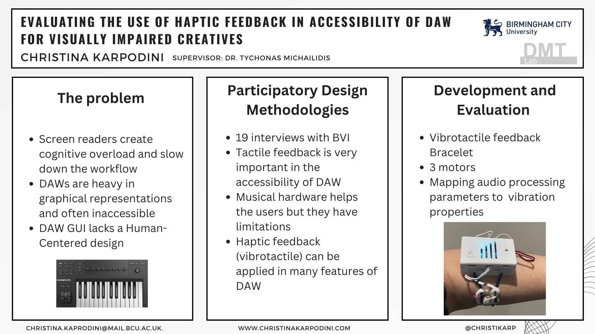
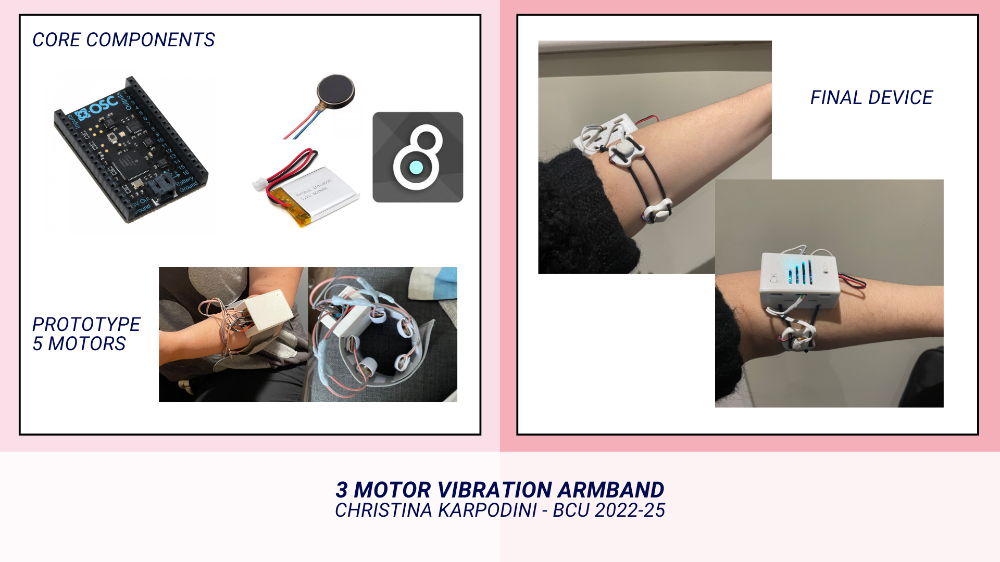

Research & Teaching
Christina is a Lecturer in Computing at Birmingham City University. She is leading the NIME module (new interfaces for musical expression) in the Music Technology Course (BSc) and teaching other modules related to Physical Computing in the Computer Science course (BSc).
Her current research focus is on Music Human-Computer Interaction. As a postdoctoral researcher, she is exploring additional opportunities to make digital music accessible. Haptic technologies and Vibrotactile feedback are in focus as a means of accessibility and advancement of sound-human interactions. Her practice, as both a digital artist and a researcher, is inspired by critical theories and disability studies, postphenomenology, and acoustic ecology.
c.karpodini@gmail.com
christina.karpodini@bcu.ac.uk
PhD Theses: Evaluating the use of haptic feedback for the accessibility of Digital Audio Workstation for Blind and Visually Impaired Music Producers
Christina is a PhD student in the DMT Lab at Birmingham City University, UK. Her research focuses on designing and developing novel accessibility tools for processing and experiencing information through haptics in music production. The research challenges current human-computer interaction paradigms intending to devise new ways in which visually impaired users can process information, navigate, interact and collaborate.
​  